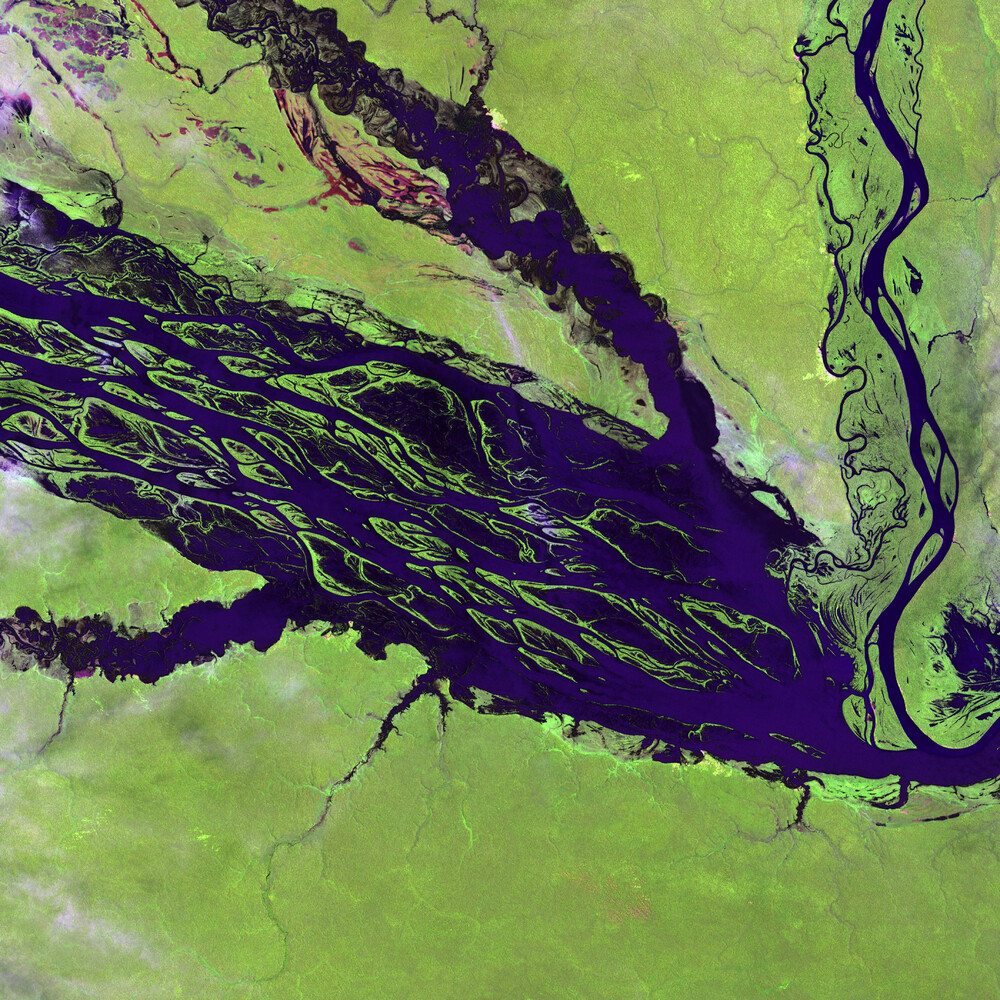
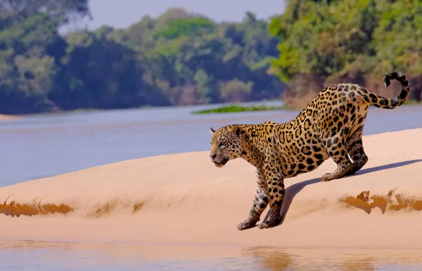
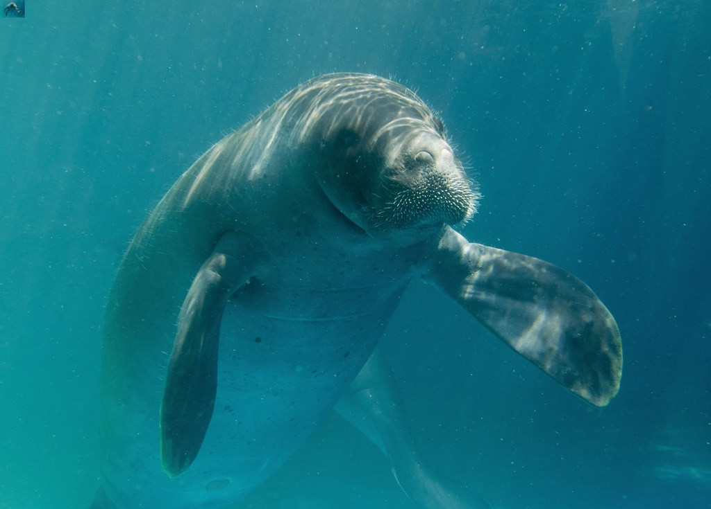

Ao total existem 11.154 mil regiões no planeta consideradas Patrimônio da Humanidade ou Patrimônio Mundial pela Organização das Nações Unidas para a Educação, a Ciência e a Cultura (UNESCO). Os locais recebem o título por serem de valor excepcional e universal para a cultura da humanidade.
A lista, que está em constante crescimento, reúne nomes desde 1972, quando foi adotada pelos países membros da UNESCO, a Convenção do Patrimônio Mundial Cultural e Natural. O objetivo é preservar bens culturais e naturais de excepcional valor para humanidade, e que, portanto, sejam considerados “patrimônios de todos os povos”, como explica a instituição.
A seleção reúne territórios, como a Cidade de Quito no Equador, o Centro Histórico de Puebla no México e o Cairo histórico, no Egito, entre outros. No Brasil, são 23 sítios de diversos tamanhos que recebem o título; seja pelo valor cultural ou natural, a lista abrange pontos de Norte a Sul do país, com diferentes características que os tornam tão valiosos para a humanidade.
Patrimônios da Humanidade na região Norte do Brasil
Complexo de Conservação da Amazônia Central
Maior área protegida da Bacia Amazônica e uma das regiões mais ricas em biodiversidade do planeta.
O sítio de 6 milhões de hectares é, segunda UNESCO, a maior área protegida da Bacia Amazônica, sendo formado por quatro unidades de conservação: Parque Nacional do Jaú, Parque Nacional de Anavilhanas, Parque Nacional do Amanã e Reserva de Desenvolvimento Sustentável Mamirauá, a primeira foi inscrita na lista de Patrimônios Naturais da Humanidade em 2000, enquanto as outras três foram reconhecidas em 2003.
O Complexo de Conservação da Amazônia Central está principalmente na confluência dos rios Negro e Solimões e contém maior parte dos ecossistemas existentes na Amazônia, desde florestas de sequeiro, pântanos, cachoeiras, praias de areia branca durante a seca, até florestas de várzea e igapó periodicamente inundadas.

Ao lado esquerdo do rio está a margem leste do Parque Nacional do Jaú. Foto: Domínio Público | Por: NASA and USGS EROS Data Center Satellite Systems Branch.
“Há uma grande diversidade de vertebrados, com 120 espécies de mamíferos, 411 de aves, 15 de répteis e 320 de peixes. Numerosas espécies ameaçadas vivem na região, como o pirarucu, o peixe-boi amazônico, o jacaré-açu, a ariranha e a onça-pintada”, explica o Instituto do Patrimônio Histórico e Artístico Nacional (IPHAN).
O Complexo de Conservação da Amazônia Central contem cerca de 60% das espécies de peixes relatados na Bacia do Rio Negro , além de 60% das aves registradas da Amazônia, segundo IPHAN.

Ao lado esquerdo do rio está a margem leste do Parque Nacional do Jaú. Foto: Domínio Público | Por: NASA and USGS EROS Data Center Satellite Systems Branch.

Peixe-boi-da-amazônia, menor espécie de peixe-boi do mundo e única a nadar em água doce. Foto: AMPA.
Critérios UNESCO
Critério (ix):
"As florestas alagadas de várzea e igapó, lagos, rios e ilhas do local demonstram processos ecológicos em andamento no desenvolvimento de ecossistemas terrestres e de água doce. Eles incluem um mosaico em constante mudança e evolução de canais de rios, lagos e formas de relevo. Em constante movimento, os tapetes flutuantes de vegetação típicos dos cursos d'água de várzea incluem um número significativo de espécies endêmicas e a maior variedade de peixes elétricos do mundo. Anavilhanas contém o segundo maior arquipélago fluvial do mundo, muito melhor preservado que o maior arquipélago de Mariuá, localizado no mesmo rio a montante de Anavilhanas. Ele ilustra o processo de colonização e evolução da vegetação em mudanças de relevo", UNESCO.
Critério (x):
"A propriedade protege uma grande e representativa amostra da flora e fauna das florestas da Planície Amazônica Central, com um número significativo de ecossistemas terrestres e aquáticos associados à floresta que são periodicamente inundados por inundações sazonais, além de pântanos. Conhecida como uma das maiores Áreas Endêmicas de Aves e também como Centro de Diversidade Vegetal, a propriedade protege uma impressionante variedade de espécies de flora e fauna, das quais cerca de 60% das espécies de peixes que vivem na bacia do Rio Negro e 60% das aves registradas na região da Amazônia Central. Caracterizada por um alto grau de endemismo, grande parte da vida selvagem é noturna. A propriedade representa uma das regiões mais diversificadas para primatas, com espécies ameaçadas de extinção como o uakari careca (Cacajao calvus) e o macaco-esquilo-preto saimiri (Saimiri vanzolinii) e algumas espécies aquáticas ameaçadas de extinção como a ariranha (Pteronura brasiliensis), o peixe-boi da Amazônia (Trichechus inunguis) e o jacaré-preto (Melanosuchus Niger) . Outras espécies notáveis são o uacari-preto-de-dorso-dourado (Cacajao melanocephalus), jacaré-amarelo (Caiman crocodilus), onça-pintada (Panthera onca) e gavião-real (Harpy harpyja), sendo os dois últimos 'quase ameaçados' de acordo com a Lista Vermelha da IUCN. O pirarucu (Arapaima gigas), o maior peixe de água doce da América do Sul, e duas espécies de botos (Inia geoffrensis e Sotalia fluviatilis), os três com status de 'dados deficientes', também são encontrados na propriedade. Além disso, 64 espécies de peixes elétricos", UNESCO.
Unidades de conservação do Complexo de Conservação da Amazônia Central:
PARQUE NACIONAL DO JAÚ